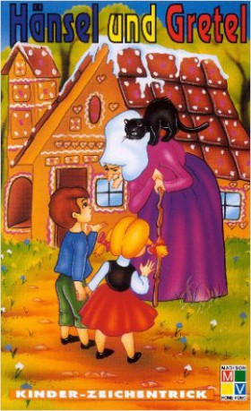

IMDB-Wertung: 5.8 / 10
IMDB-Wertung: 5.8 / 10  Metascore:
Metascore: 
 IMDB-Wertung: 5.8 / 10 Metascore:
Jahr: 1954
Dauer: 51 Minuten
FSK: 6
Land: West-Deutschland Studio: Jugendfilm-VerleihTonspuren:
Untertitel:
Auflösung: 720p (984x720) Größe: 1310 MB
Regisseur: Walter Janssen
Drehbuch: Jacob Grimm, Wilhelm Grimm, Gerhard F. Hummel
Soundtrack: Giuseppe Becce
Darsteller:
Datei: X:\Märchen\Hänsel und Gretel (1954, FSK6, 984x720).mkv seit 29.12.2018
Festplatte: Kinder-Filme+Trick
 Es gibt insgesamt 61 Filme in der Gruppe 'Märchen'
Es gibt insgesamt 61 Filme in der Gruppe 'Märchen'